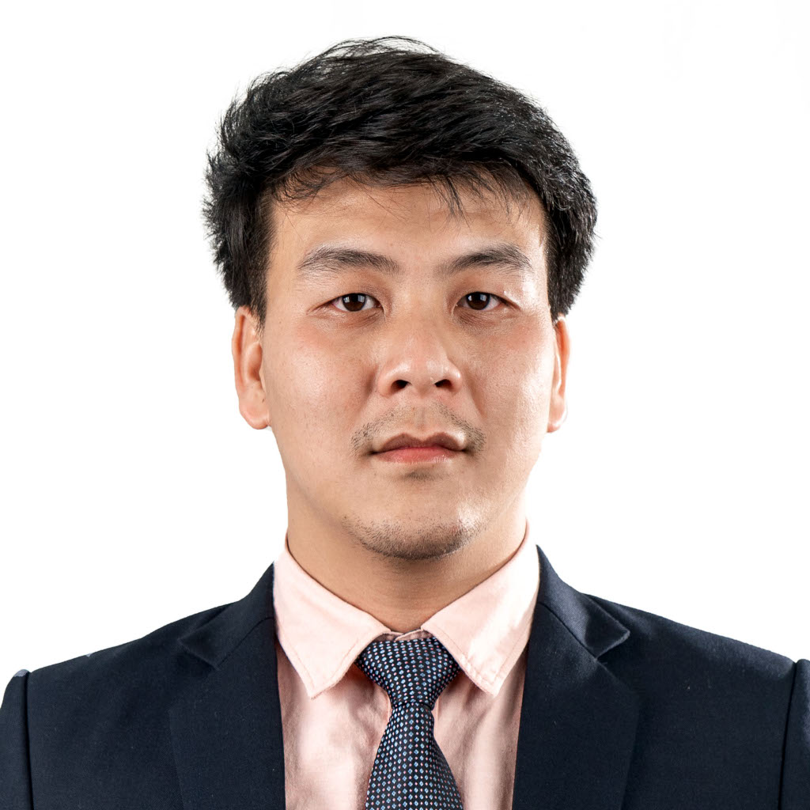

My Resume
Nattapong Sreewichai

Summary
- High responsibility and working hard.
- Good interpersonal skill and teamwork.
- Creating and initiated.
Education
- 2012-2015: Major of Instrumentataion System Engineering, Faculty of Engineering, KMUTNB
- 2009-2011: High Vocational Certificate of Electronic Communication, RMUTL
- 2006-2008: Vocational Certificate of Electronic, Chiangmai Technical Collage
Work experience
- Instrumentation filed internship, Inter Pacific Paper Co., Ltd.
- Electronic engineer, ElectronicPro Design Co., Ltd.
Skills
- Language: English, Thai
- Programming Language: Assembly, C/C++, Python
- Hardware Design: Altium, KiCad, Eagle, EasyEDA
- Embedded System, Microcontroller